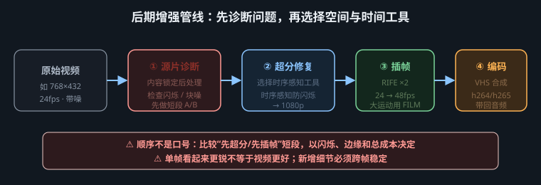

先把“播多快、装成多少 fps、怎样改时间、是否生成新帧”拆开，再决定该补帧、变速还是返工

“改成 60 帧”“重采样”“插帧”常被当作同一件事，结果不是慢一倍，就是帧数变多但运动仍一顿一顿。判断时同时写下帧总数 N、显示时间戳、封装帧率和总时长 D，不要只看播放器角落里的 fps。
| 操作 | 真正改变什么 | 是否创造中间画面 | 典型结果 |
|---|---|---|---|
| 播放速率解释 | 让既有帧更快或更慢地显示 | 否 | 同一批帧改为 0.5× 播放，时长约翻倍；动作和音频都需重新解释 |
| 帧率封装/时间基准 | 写入容器或码流的 fps、time base、时间戳 | 否 | 仅把 24 声明成 48，若帧数不变则时长约减半；有的软件会转码并复制帧以保时长，那已不只是改标签 |
| 时间重采样 | 把输出时刻映射回源时间，可丢帧、复制、混合或调用插值 | 不一定 | 统一可变帧率、做速度曲线，或把 23.976 转到交付时间网格 |
| 光流/神经插帧 | 估计两帧之间的运动与可见性，合成新的中间画面 | 是 | 时长不变时，24→48 fps 获得更密的运动采样 |
若只想更流畅，目标通常是时长不变、音频不变、输出时间戳更密；若要慢动作，则是先取得更多可信帧，再延长画面时长，音频需另行拉伸、重做或静音。把两种目标混在一次导出里，最容易造成音画漂移。
插帧前逐帧检查切镜、重复帧、跳帧和可变帧率。AI 生成视频可能呈现“24 fps 文件、实际每两帧重复一次”的 12 fps 有效节奏；直接做 2× 插帧只会在重复帧之间生成另一张重复画面。先按画面哈希或差异值标出连续相同帧，再结合正常速度目视确认，不能把静止镜头误判为重复。
同时确认 23.976、24、25、29.97、30 等精确值。23.976 并不等于 24，长片若按近似值重写时间基准，音频会逐渐漂移。可变帧率素材应先依据原时间戳转为项目所需的恒定帧率；转化中使用复制、丢弃还是插值，要写入工艺记录。
经典光流先估计像素或区域从 A 帧移动到 B 帧的方向，再把两帧扭曲到中间时刻并融合。神经插帧也可能估计双向流、深度、遮挡掩码和残差，再由网络修补；RIFE、FILM 或剪辑软件里的 Optical Flow 只是当前实现的例子，不是永久推荐。版本、权重、输入尺度和镜头类型变化后都应重测。
遮挡是最难的问题：人物经过柱子时，柱后区域在 A 帧不可见、到 B 帧才出现，算法没有真实证据，只能猜。交叉的手指、旋转轮辐、透明玻璃、烟雾、水花、闪光和字幕也会破坏一一对应关系，常见结果是双影、拉丝、局部溶解或凭空纹理。
运动模糊记录的是曝光期间的一段轨迹，不是一件可直接搬动的物体。源片模糊很重时，算法可能移动“模糊条”而形成重影；源片很锐而新增帧也很锐时，48/60 fps 又可能显得电子化。应先得到几何可信的中间帧，最后按输出快门观感统一运动模糊，不要在插帧前反复加模糊。
任何方法都不应跨硬切生成中间帧，否则会得到两场景叠化的“幽灵帧”。先做镜头检测并在切点断开；淡入淡出可保留原过渡或单独测试，不能把模型偶然生成的顺滑当成正确。插帧改善的是采样密度，不会修好原片的动作逻辑、几何突变和身份漂移。
恒定帧率下先用 D ≈ N / fps 做快速核对，再以首尾显示时间戳为准。24 fps、6 秒素材目标 48 fps，预期仍是约 6 秒、约 288 帧。严格按相邻区间补一帧时，N 帧的 2× 序列可能得到 2N-1 帧；有些实现会复制或延展尾帧得到 2N。不要为了凑整数盲目补尾帧，验收重点是首帧、尾帧和总时长与原片一致。
| 目标 | 画面处理 | 封装 | 音频 |
|---|---|---|---|
| 24→48，更流畅 | 每个有效间隔生成中间帧 | 48 fps，保持原首尾时间 | 原音频不变，按原时间码接回 |
| 24→60，更流畅 | 直接生成目标时刻，或高倍率后按时间戳重采样 | 60 fps，时长不变 | 原音频不变 |
| 24 素材做 0.5× 慢动作 | 先补足慢放所需的时间采样 | 项目 fps 不变，画面时长约 2× | 做高质量时间伸缩、重新设计声音或移除同期声 |
| 只改 24 标签为 48 | 不补帧 | 帧数不变，时长约 0.5× | 不处理就会错位 |
目标：分辨率与时长不变，48 fps 交付；脸、手、控制台文字不可改写，对白首尾同步。
| 症状 | 高概率原因 | 处理顺序 |
|---|---|---|
| 插帧后慢一倍 | 帧数约翻倍，封装仍写源 fps | 核对帧数与时间戳 → 输出 fps 改为目标值 → 比较总时长 |
| 显示 60 fps 但仍卡顿 | 只改标签，或转码器复制了原帧 | 逐帧找重复 → 查实际新增帧 → 重新按目标时刻插值 |
| 手、栏杆出现果冻和双影 | 遮挡、交叉运动或位移过大 | 缩短测试段 → 换机制 A/B → 降倍率/分段 → 保留原帧或返工 |
| 快速物体拖出透明尾巴 | 源运动模糊被当作纹理搬运 | 换更合适的插值策略 → 降低补帧目标 → 插值后统一模糊 |
| 每隔几帧顿一下 | 源片有重复帧、VFR 转换错误或 23.976/24 混用 | 查重复节奏与时间戳 → 统一项目时间基准 → 再插帧 |
| 音频开头准、结尾漂 | 画面总时长改变，或近似 fps 造成累计误差 | 比首中尾时间码 → 恢复精确 fps → 先修画面时长，再决定音频是否拉伸 |
□ 记录精确源/目标 fps、帧数、首尾时间戳与总时长；□ 区分了变速、改封装、时间重采样和真正插帧；□ 无跨切镜生成的混合帧；□ 重复帧已识别且未被继续放大；□ 正常速度节奏自然，慢速检查无双影、拉丝和局部溶解；□ 遮挡边界、手指、文字、细杆、反射、烟雾通过检查；□ 运动模糊连续且没有电子化锐跳；□ 音频存在，首中尾三点同步；□ 输出为交付要求的恒定或可变帧率，播放器与媒体信息一致；□ 工具、版本和参数已归档，原片未覆盖。